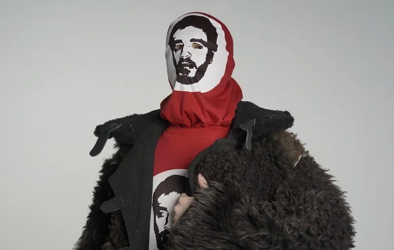

Голос улиц · Сказитель нового времени

Хаски (настоящее имя — Дмитрий Кузнецов) — российский рэп-исполнитель, чьё творчество стало голосом целого поколения. Родился в 1993 году в Улан-Удэ, вырос на Дальнем Востоке, а свой путь в музыке начал в Москве.
Его стиль — это сплав уличного рэпа, русского фольклора и постмодернистской поэзии. В текстах — деревня и город, вера и отчаяние, любовь и смерть. Хаски называют «сказителем нового времени», а его манеру — «пост-рэпом с душой русского народа».
За плечами — несколько студийных альбомов, десятки синглов и участие в главных фестивалях страны. Его концерты — это не просто выступления, а настоящие обрядовые действа.
2015
Дебютный альбом, в котором Хаски заявил о себе как о новом голосе русского рэпа.
2016
Второй студийный альбом, наполненный урбанистическими образами и социальной сатирой.
2017
Один из самых значимых альбомов, где Хаски соединил рэп с народными мотивами.
2019
Экспериментальный релиз, в котором слышны отголоски бурятского фольклора.
2021
Сборник лиричных треков, где Хаски предстаёт в роли современного сказителя.
2023
Новый этап в творчестве — сочетание старых мотивов и нового звучания.
Альбом «Любимые песни» · 2015
※ Демо-плейлист. Замените аудиофайлы на реальные треки.
«Я не рэпер, я — сказитель,
мой микрофон — гусли»
«На панельке вырос,
но душой в деревне»
«Голос улиц — это голос Бога,
только громче»